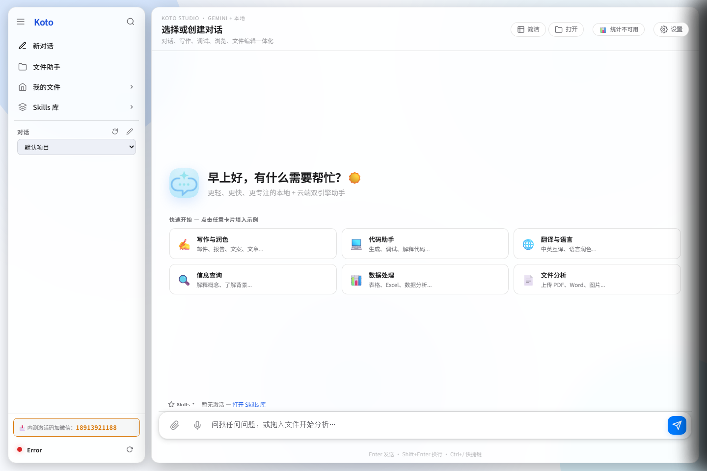
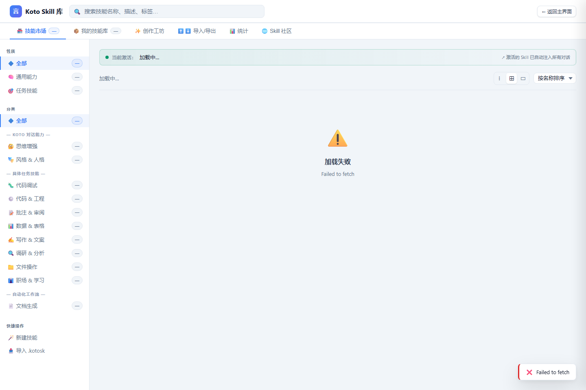
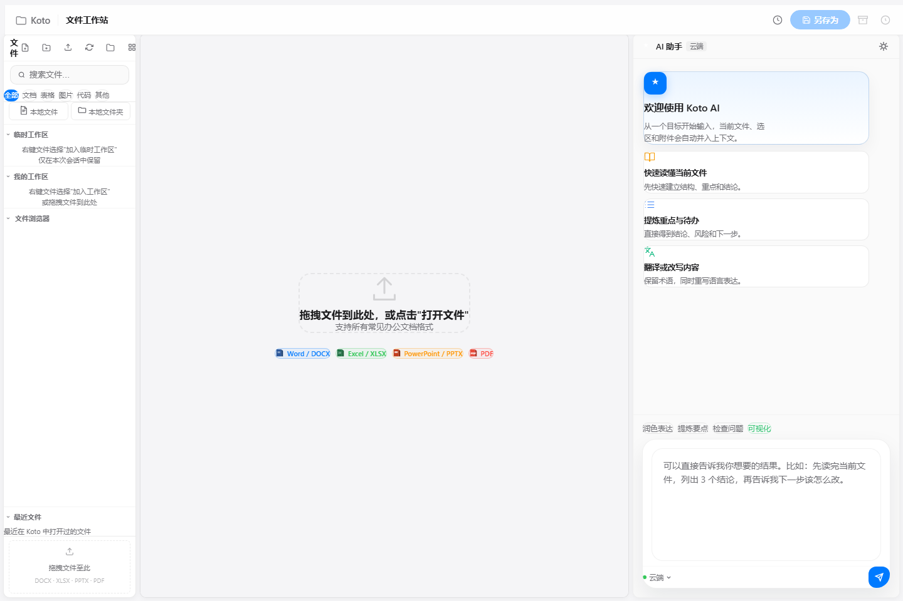
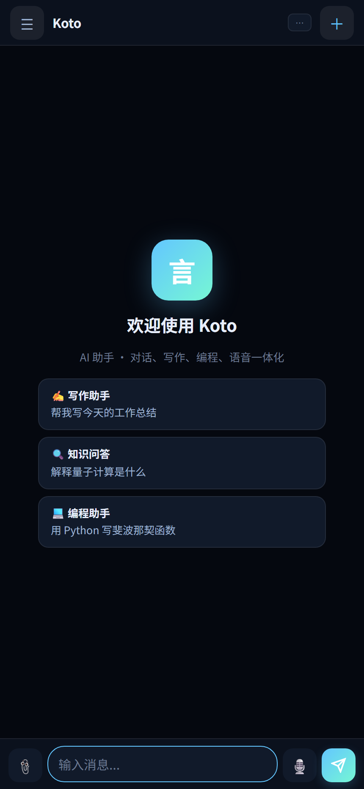

直接在你的电脑上打开并 AI 编辑 Word、PPT、Excel。90+ 内置技能覆盖润色、翻译、摘要、对比、数据分析等高频办公任务；Doc Agent、工作流引擎与知识库 RAG 进一步把零散操作升级成可持续复用的工作流，而数据始终留在你的设备上。

下面这条 3 步流程，用最短路径说明 Koto 的核心体验：不是把内容贴给 AI，而是直接围绕文件、技能和结果持续推进任务。
从工作区直接打开合同、周报、PPT 或多份资料，保留上下文、结构和原始格式，不需要先把内容拆出来再丢进聊天框。
选中文字即可触发内联技能，也可以让 Doc Agent 或工作流引擎接管更复杂的对比、提取、清洗、总结与生成任务。
处理结果不是停留在对话里，而是回到文档、表格、报告或结构化结果中，方便继续审阅、交付、复用和自动化下一步。
在 Word、PPT、Excel 中选中文字，悬浮工具栏即时弹出。90+ 内置技能覆盖文档、数据、代码、办公全场景，也支持自定义提示词创建专属技能。
一键优化文章表达、中英互译、提炼关键要点。支持正式 / 轻松 / 专业多种语气，保留专业术语和文档格式。
跨格式（DOCX/XLSX/PPTX/PDF）逐段对比两份文档，高亮新增、删除、修改内容，输出结构化差异报告。
AI 自动识别 Excel 表格结构，根据参考文档或对话指令批量填写数据，处理合并单元格、公式和格式。
上传问卷文件与参考资料，AI 自动匹配问题与答案，批量填写选择题、填空题，导出完成的表单。
从 DOCX、XLSX、PPTX 中同时提取关键字段，自动汇总到结构化报告，支持自定义提取规则。
可视化编排多步骤 AI 任务：文档生成、数据清洗、报告输出，串联多个技能，一次触发全流程。
在安全沙箱中执行 AI 生成或用户编写的 Python 代码，支持图表输出，结果直接展示在对话界面。
用自然语言描述你的需求，AI 自动生成专属技能配置。内置 90+ 技能覆盖写作、数据、代码、办公全场景。

把真实技能市场放在这里，访问者会立刻明白 Koto 提供的是一套可扩展的 AI 能力体系，而不是零散的小工具。分类清晰、入口完整、能力持续增长，更容易把“可长期使用”这件事讲明白。
文件内联编辑、知识库 RAG、语音交互、代码沙箱——本地处理确保隐私，Gemini 或 Ollama 按需调用
打开 DOCX、PPTX、XLSX 文件，选中文字即弹出 AI 悬浮工具栏，一键润色、翻译、摘要，修改结果直接应用到文档，无需复制粘贴。
自主规划并执行多步骤文档任务：跨文件提取、批量改写、自动生成报告。基于 Tree-of-Thought 推理，任务进度实时流式展示。
内置 12 种开箱即用工作流：文档对比、数据清洗、问卷填写、邮件摘要等。可视化编排，串联多技能，一次触发全流程自动化。
内置文件浏览器，直接管理本地文件夹。创建、重命名、删除、移动，支持右键菜单，所有操作都在本地完成，文件不上传任何服务器。
Gemini 云端多模态 + Ollama 本地模型自由切换，多轮记忆，流式实时响应。支持上传图片、附件，结合知识库进行 RAG 问答。
上传 TXT、Markdown、PDF、DOCX 文件构建本地知识库，AI 对话时自动语义检索关联内容，让 AI 了解你的私有文档。
语音输入提问，AI 回复支持 TTS 朗读，打造更自然的人机交互体验。完全本地语音处理，无需上传音频数据。
安全沙箱执行 Python 脚本，支持图表输出。多文件协同处理器可跨 DOCX/XLSX/PPTX 批量操作，定时任务全程自动化。
这张界面能把 Koto 和普通聊天产品迅速区分开：左侧是本地文件与工作区，中间是当前任务，右侧是 AI 助手。访问者会直接理解，Koto 的价值不是“问一下 AI”，而是让 AI 在真实文件流转里持续协作。

给访问者更直观的预期：打开什么文件、触发什么能力、最后得到什么结果。下面这些样例覆盖文档、表格、PPT 和跨文件协同。
把新版合同和旧版模板放进工作区，Doc Agent 自动对比条款变化，识别付款、违约、交付等风险点，并生成可直接回传法务的修订建议。
打开销售或运营 Excel 表格后，Koto 可补齐缺失字段、识别异常值、生成统计图表，并把关键结论整理成适合管理层查看的自然语言摘要。
从 DOCX、PPTX、PDF、XLSX 等多份资料中抽取公司名称、报价、交付周期、联系人等字段，自动汇总成统一表格，适合资料核对和信息建档。
在 PPT 页面里直接选中标题或正文，调用润色、压缩表达、翻译或风格统一技能，快速把零散页面调整成一套适合汇报的完整叙事。
下面用两个最容易理解的 before/after 场景，帮助访问者快速感受到 Koto 带来的效率提升和交付质量变化。
两份合同版本散落在文件夹里，需要人工逐段比对付款、交付、违约责任等差异，再手工整理成法务可审阅的修改意见。
Koto 自动比较条款变化，提炼风险点，输出结构化差异摘要和可直接回传的修订建议，让下一轮审阅更快进入决策。
运营或销售表格字段不统一、存在缺失值和异常项，团队需要先清洗数据，再做图，再把结论翻译成自然语言周报。
Koto 识别表格结构、补齐字段、生成图表并总结重点，最终得到更适合管理层阅读的周报内容和异常提醒。
世界级产品页会把“为什么选你”讲得非常直接。这里用最关键的工作流差异，说明 Koto 和通用聊天工具、传统办公插件的不同。
不是模型参数，而是能不能真正把文件工作接住、做完、复用起来。
围绕真实文件、任务上下文与可复用流程设计。
适合快速咨询，但通常不是围绕文件流程构建。
适合补一个按钮，但往往很难承接完整任务链路。
下载 Windows 便携包，填入 Gemini API Key 即可开始。或从源码运行（Python 3.11+）。数据留在本地，按需开启云端能力。
前往 GitHub Releases 下载最新 Windows 便携包，解压后运行 koto.exe，或从源码用 python server.py 启动，浏览器访问 localhost:5000。
在设置页面填入你的 Google Gemini API Key，所有 AI 功能立即解锁。也可配置本地 Ollama 模型实现完全离线运行。
在工作区浏览器中打开 Word、PPT 或 Excel 文件，选中文字后 AI 悬浮工具栏自动出现。选择技能，AI 即时处理，一键应用到文档。
云端模式：在 Google AI Studio 免费申请 Gemini API Key，填入设置即可使用全部功能。
本地模式：安装 Ollama 并下载模型（如 llama3、qwen），Koto 自动检测并切换，完全离线运行。
有问题？加微信咨询或发送「Koto 使用帮助」。
这张移动端截图补足了使用场景：用户不仅能在桌面端做深度处理，也能在手机上快速查看上下文、继续对话、补一条指令或确认结果。它传达的是同一套工作流可以自然延伸到更多场景。

把疑问提前回答清楚，能显著提升产品页的完成度与信任感。下面这些问题也是新用户最常问到的。
Koto 的核心定位是本地优先。文件、工作区与知识库默认围绕本机使用；如果你配置 Gemini 等云端模型，请按对应模型服务的方式使用。若使用 Ollama，本地模式可进一步降低外部依赖。
不是必须。你可以配置 Gemini 快速开始，也可以安装 Ollama 使用本地模型。产品页里保留两种模式，就是为了让不同隐私要求、网络条件和成本偏好的用户都能找到适合自己的方式。
如果你的日常工作经常围绕 Word、PPT、Excel、PDF 或多份资料协同展开，例如合同审阅、周报整理、问卷填写、信息提取、文档改写、汇报材料统一风格，那么 Koto 的优势会非常明显。
最大的区别是“工作对象”不同。普通聊天工具主要处理对话，而 Koto 主要处理真实文件、任务上下文和可反复复用的技能/工作流，所以更适合把 AI 变成长期生产力，而不是一次性问答。
最直接的方式是下载 Windows 便携版，解压即用；如果你希望从源码运行，页面下方也保留了 Python 方式。建议第一次体验时直接拿一份真实 Word、PPT 或 Excel 文件试一遍，最容易感受到差异。
下载最新 Release，解压即可运行。本地文件管理开箱即用，Gemini / Ollama 按需配置，无需额外安装运行环境。